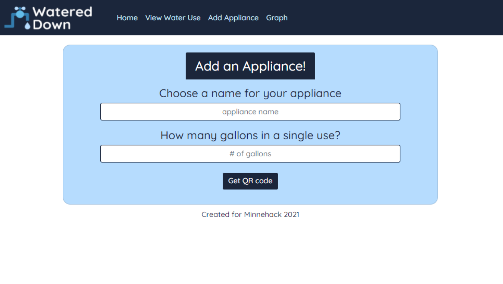
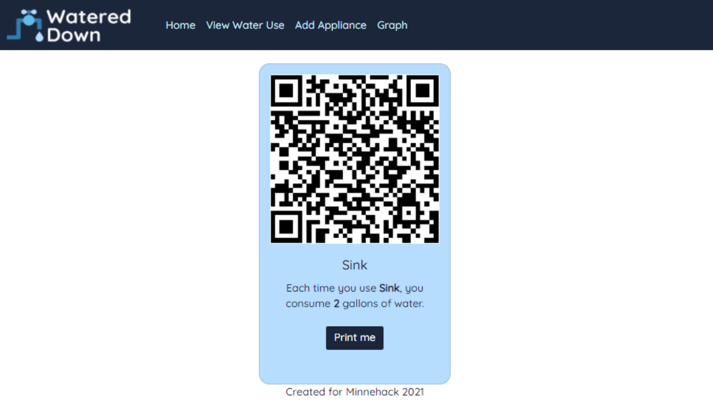
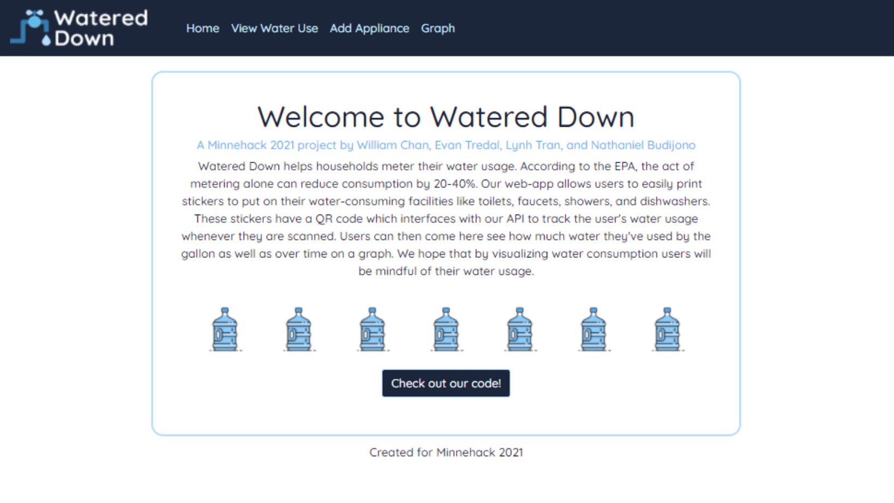
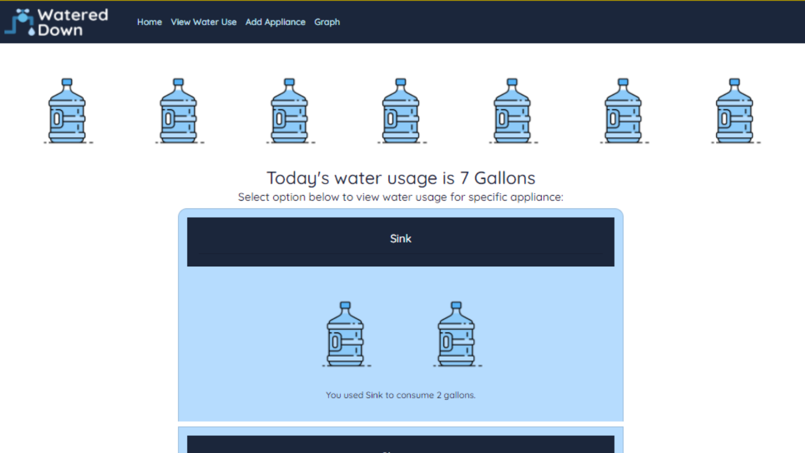

Minnehack 2021
If you're looking for a brief overview of this project, please check out our DevPost!
Setting the Scene
One week into the spring semester of my freshman year of college, some fellow coders and I decided to compete in Minnehack 2021. I'll be completely honest; this was my first ever hackathon experience, and I was quite nervous. My only experience in app development up to this point was my participation in SASE Labs (Society of Asian Scientist & Engineers) where I'd just begun learning the basics of Javascript, HTML, and CSS with React for an app called Gopher A Bite (you can read more on that project HERE). Because of Covid-19 I didn't have to worry about sleeping on the floor of an auditorium surrounded by fellow coders. However, I did prep by making a fashion statement with my blue light blocking glasses, chugging a Red Bull, and leaving the rest of the pack within arms reach for the eventual fatigue that would come with hours upon hours of programming.
The Event
On January 23rd, 2021 at noon, Nathaniel Budijono, William Chan, Evan Tredal, and I got together (virtually) and competed in Minnehack 2021.
The event began by announcing 4 prompts, 1 of which you must chose and create a solution for. The best solution to the prompt will win that prompt's prize.
The prompts were as follows:
Water – taking a circular approach to the world’s most precious resource, helping customers manage water through conservation, recycling and reuse.
Food – keeping food safe all along the supply chain, preventing foodborne illnesses and ensuring safe, high-quality food for people around the world.
Health – protecting people and businesses from the risk of exposure to germs, keeping people healthy everywhere they eat, stay, play, shop and heal.
Climate - – tackling climate change by increasing energy efficiency and reducing greenhouse gas emissions – for customers and in operations.
Brainstorming
We all immediately wanted to tackle the water prompt. If we were to be completely honest, it was probably because of its associated prize -- 4 Nintendo switches. However, we were also inspired by the need for water conservation. According to an article in Aquatic Conservation, water management can account for over 15% of the world's electricity consumption. We decided finding a way to reduce water consumption was the way to go. At some point, Nathaniel mentioned reducing water usage by showing how much water is used on a 3D house (using Evan's graphic skills he'd developed making video games). Everybody perked up. Clearly, there were some issues with this idea.
1) How would we know how much water & from where in the house it is used?
2) How would we display a 3D house?
3) Would we have enough time to make a 3d house?
 
Building Watered Down
Next, we decided on how we were to diving our work. Will was very strong with backend, so he was our mainly in charge of our API. Evan worked with how to create QR codes. With a need for a front-end developer, I gladly volunteered!
Nathaniel floated between Will and I to help with anything and everything!
Here's some of the items I did!
Navigation Bar
I decided to start with the navigation bar to have a basis for the entire web app. I decided on using React since I had some experience with it from Gopher A Bite. Using React-Router, I was able to make it pretty quickly!
Styling
I used React Bootstrap as a base, with a little manipulation to the color palette and font. I had help from
coolors.co in finding a suitable color palette and Google Fonts for finding suitable fonts.

The home page
Statistics Dashboard
This page displayed all the gallons used by the user depending on the data given to our API.

If you selected a certain appliance, it also displayed the water usage specifically for that appliance.

The App
After 24 hours (more like 18 if you count sleep), here's what we came up with!
What I learned
- How to collaboratively program with GitHub
- How to use React-Router
- Improved Javascript skills
- How to use Bootstrap for React Components